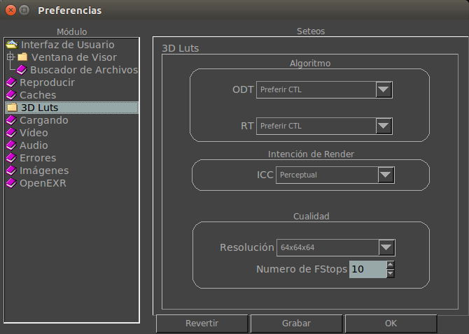

|  |
Displayte permite configurar si el LUT preferirá CTL o ICC. Esta sección te permite cambiar la Intencion de Rendering para perfiles ICC. Este seteo especifica la resolución del Lut 3D. Seteos mas altos son más precisos pero su tarjeta gráfica puede que no lo soporte. |